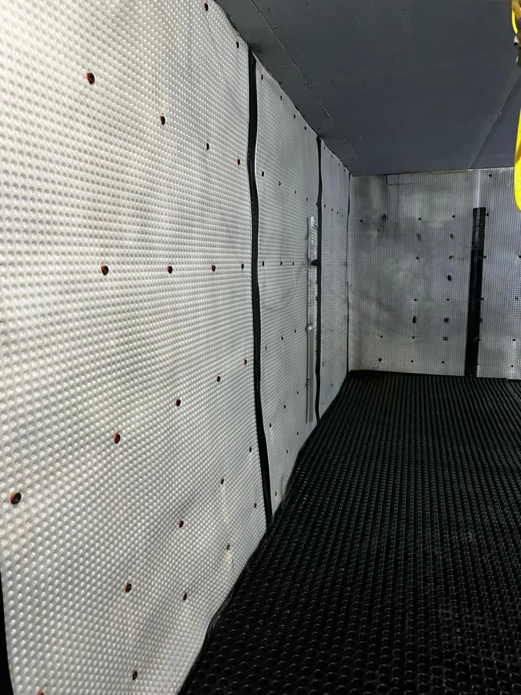

Challenge
A tight London commercial site with exposed structure, visible services and a need for a precise finish that would still feel practical for everyday use.
Case Study / Commercial
A programme-led commercial refurbishment with exposed structure, coordinated services, bespoke detailing and a refined final finish delivered by one integrated team.

This Central London commercial scheme called for a controlled refurbishment that would make the space feel sharp, durable and premium without losing the industrial character of the building. Working around exposed steel, large windows and active services, the project demanded careful sequencing and clean detailing.
As a single integrated team, we coordinated construction, joinery knowledge, electrical works and final finishing under one programme. That continuity kept decisions clear, protected the level of detailing throughout and gave the client a single point of accountability from strip-out to handover.
Approach
A tight London commercial site with exposed structure, visible services and a need for a precise finish that would still feel practical for everyday use.
A coordinated refurbishment plan that aligned structural works, services routes, lighting, joinery and final finishes before the visible details were locked in.
A refined, well-ordered commercial interior with strong architectural character, upgraded services and a premium finish delivered under tight quality control.



The completed refurbishment gives the client a commercial space that feels composed, practical and premium, with the technical services handled cleanly behind the visible finish. Delivering every discipline under one team kept the standard consistent and the process clear from start to finish.
Fit-Out
Street-facing commercial refurbishment with a restrained city palette and carefully controlled finish.
View Case Study
Residential
A full residential build with clean exterior detailing and practical family-home planning.
View Case Study
Joinery
Made-to-measure timber detailing with integrated lighting and finely controlled material finish.
View Case StudyStart the conversation
Send us your drawings, scope or early idea for your own refurbishment. We will review what you have and advise the next practical step.
Request Consultation